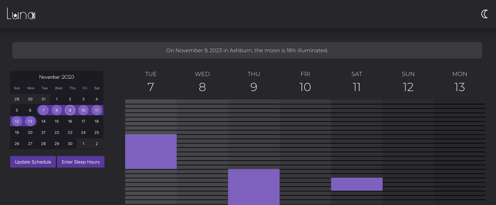

My Work

This is Luna a site devoted to helping you understand your sleep and how the outside world affects it.

Project 2 description goes here.
Hello, I'm Opal Snellneberger, and I welcome both they/them and she/her pronouns. My interests revolve around technology and leisure. I'm currently playing in Factorio, where I manage resources and optimize production as I aim for achievements that i have yet to complete. Away from the gaming and coding realms, I relax by exploring content on YouTube, from tech tutorials to casual entertainment. My passion for technology goes beyond the surface; I've delved into X86 assembly language and even ventured into designing a CPU architecture, highlighting my commitment to understanding technology at its fundamental level. In addition to my personal pursuits, I also serve as an IT intern at Edutech, where I gain practical experience and contribute to the tech landscape. This experience aligns with my career aspirations as a backend developer or software engineer, and I'm enthusiastic about the challenges and opportunities this journey will bring.
This is Luna a site devoted to helping you understand your sleep and how the outside world affects it.
Project 2 description goes here.
Email: opalsnell@gmail.com